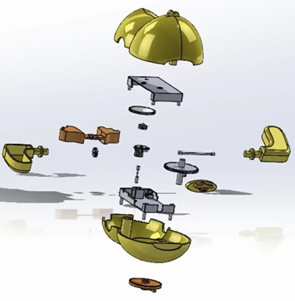
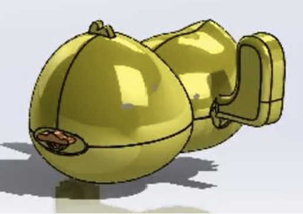

Sheet 06 of 06
Penn Engineering · 2025
Take a toy apart, measure every piece, and rebuild it in CAD until the mechanism works again on screen.
Role
Individual coursework
Course
Penn Engineering
Mechanical Design
Built with
SolidWorks · Precision measurement
Deliverable
Working assembly + exploded view
Disassemble a mechanical wind-up toy, analyze how it works, and reproduce it as a CAD assembly — preserving both the mechanism and the way the object actually looks. The constraint that makes this harder than it sounds is that appearance counts. A model that captures the gear train but loses the shape of the shell has only done half the job.
I took the toy down to individual components and measured each one. Precision matters more here than in most modeling work, because the parts have to mate correctly at the end — mismeasuring a gear would ruin the CAD, and the error only shows up once everything is assembled.
Each part was modeled separately in SolidWorks and then brought together into an assembly. I checked fit and appearance before adding material appearances and rotation mates, so that the internal mechanism turns in the model the way it turns in the object.


A fully functional 3D assembly with all internal mechanisms operating correctly, plus a detailed exploded view documenting how the toy goes together.
It's a small project, but it's the one that most directly built the habits the rest of this portfolio depends on: measuring carefully, modeling deliberately, and assuming an assembly doesn't work until it's been checked. Reverse-engineering an object someone else designed also forces you to reckon with decisions you wouldn't have made yourself — and to work out why they made them.
100%
Internal mechanisms modeled and functioning in assembly
1:1
Every component measured and modeled individually
CAD
Exploded view produced as assembly documentation